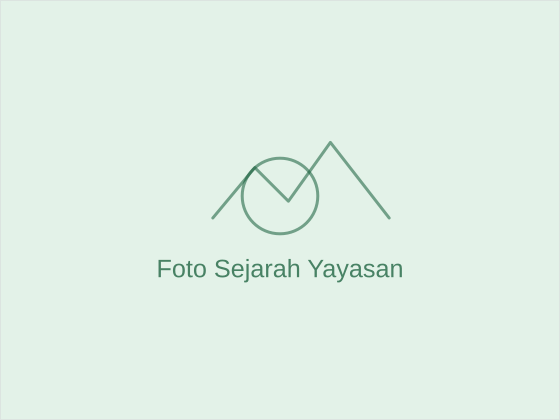

Bagaimana Kami Memulai
[SEJARAH YAYASAN — ceritakan latar belakang pendirian yayasan, tahun berdiri, serta motivasi awal dibentuknya organisasi ini].
[Lanjutan cerita — dapat berisi milestone awal, program pertama, atau perkembangan singkat sejak didirikan].

Visi & Misi
Visi
Yayasan Padang Wulan Cipicung bertujuan menjadi organisasi yang memberikan dampak positif dan berkelanjutan bagi masyarakat Indonesia.
Misi
- [Poin misi pertama yayasan]
- [Poin misi kedua yayasan]
- [Poin misi ketiga yayasan]
- [Poin misi keempat yayasan]
Nilai-Nilai Yayasan
Prinsip yang menjadi landasan setiap program dan keputusan yang kami ambil.
Kepedulian
Mengutamakan empati dalam setiap program yang dijalankan.
Integritas
Bekerja secara jujur, transparan, dan bertanggung jawab.
Kolaborasi
Membuka ruang kerja sama dengan berbagai pihak.
Berkelanjutan
Merancang program yang memberi dampak jangka panjang.
Tujuan Yayasan
- [Tujuan pertama — misalnya meningkatkan akses pendidikan bagi anak kurang mampu]
- [Tujuan kedua — misalnya mendorong kemandirian ekonomi masyarakat]
- [Tujuan ketiga — misalnya memperluas jaringan relawan dan mitra sosial]
Ingin Tahu Lebih Jauh Tentang Program Kami?
Jelajahi program-program yang sedang kami jalankan atau hubungi kami untuk informasi lebih lanjut.